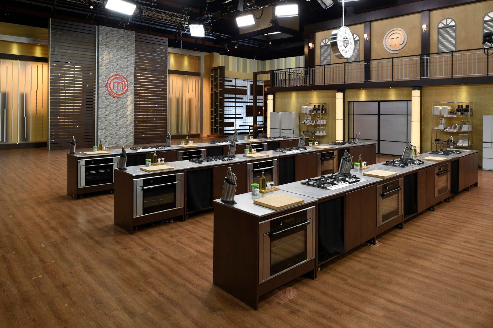

Què és CuinUOC?
CuinUOC és un esdeveniment culinari que organitza la Universitat Oberta de Catalunya (UOC) per a la seva comunitat. En aquesta edició, els participants hauran de cuinar una recepta de cuina saludable i sostenible. Els millors plats seran premiats per un jurat d'experts en cuina.
Quan i on es celebra?
CuinUOC es celebra el 15 de juny a les 19:00h a la seu de MasterChef (Carrer de la Marina, 16, 08005 Barcelona) i es retransmetrà en directe a través de la web de CuinUOC.
Inscriu-t'hi ara 